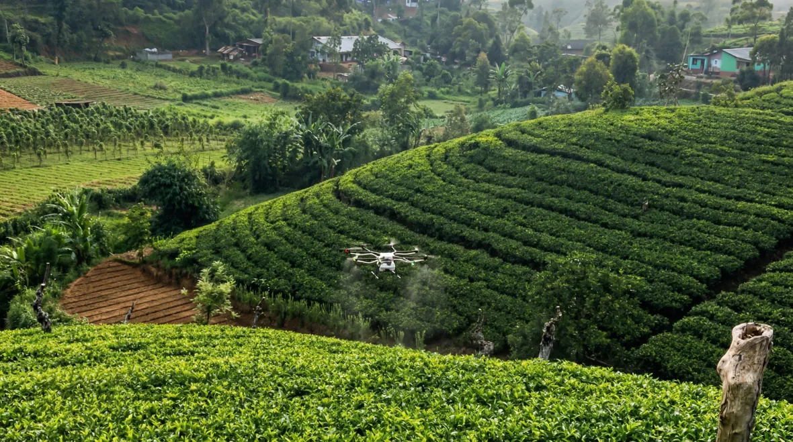

Autonomous Crop Spraying
BRAIIN's autonomous drone systems enable precise crop spraying across large agricultural areas.
- Drones apply targeted treatments with high accuracy
- Reduces labour requirements and improves efficiency
- Automated aerial systems cover large areas quickly